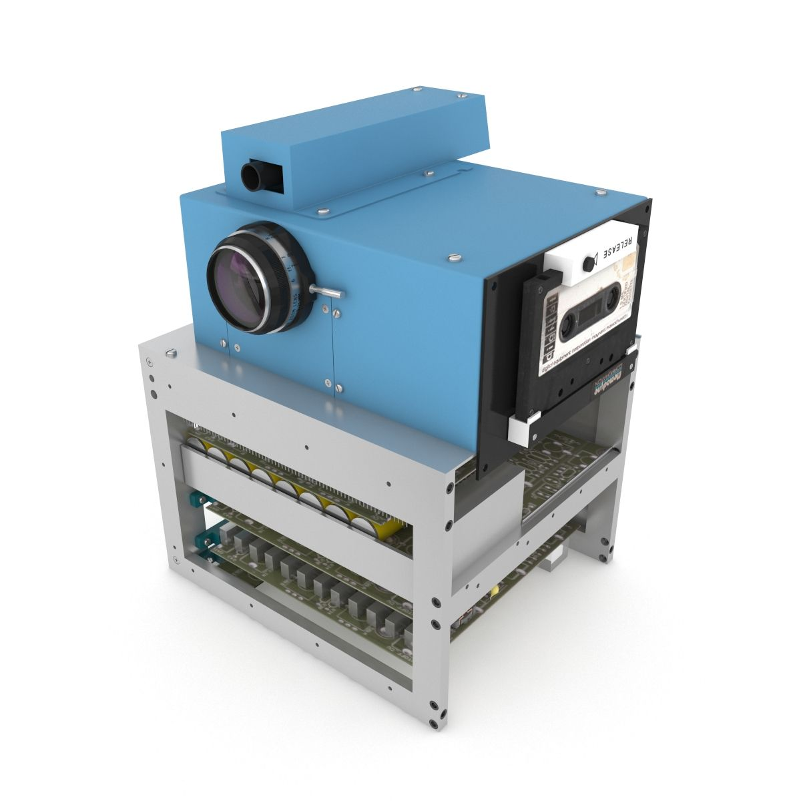

L'aventure commence en 1975 chez Kodak. Un ingénieur nommé Steven Sasson crée le tout premier prototype d'appareil photo numérique. C'était un appareil imposant, de la taille d'un dictionnaire, qui enregistrait des images en noir et blanc sur une cassette audio.

Il a fallu attendre 23 secondes pour enregistrer la toute première photo, qui ne faisait que 0,01 mégapixel ! Aujourd'hui, nos smartphones sont des millions de fois plus puissants, mais tout a commencé avec cette invention révolutionnaire.